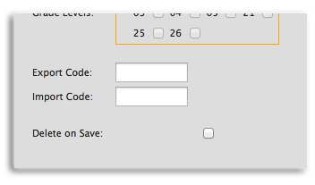

<div class='panelBlock' id='connectivity'>
<div class='screenshot'>


<div class='prose' style='width:410px;padding:50px;'>

<div class='subTitle' style='font-size:110%;font-weight:bold;margin-bottom:15px;'>
Export/Import
</div>

Expressbook can export the marks for any activity into a database or file. The resulting marks
are tagged with the student ID and an Activity Export ID. The Activity Export ID is 
a tag that is expected by the system that will receive the export.
<br/><br/>
Expressbook can similarly receive data as an import. The data must be tagged with the 
student ID and an Activity Import ID. When received, the mark will appear in the 
gradebook along with all other marks. The only difference is that it can't be changed
and is annotated as an import.
<br/><br/>
In either case, the external system and Expressbook need to be set up to have corresponding
marks scales and, of course, the Student IDs need to be coordinated.


</div>

</div>